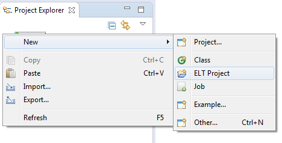

To Create an ELT project in Hydrograph, users have been provided with options in the File menu, Tool bar and the Project Explorer.
Under the File Menu -> New -> ELT Project, creates a new project on the Canvas.

Users can alternatively click on the Tool bar button to create a new ELT Project.

Right Click Project Explorer -> New -> ELT Project also creates a new ELT project in Hydrograph.

On creating a new project, the new ELT project window opens up. User needs to provide a name to the project and browse a location to save it. By default, the job is saved in the project workspace.

Click on Finish and the tool will create the project and it will be visible in the Project Explorer with default folder structure followed in Hydrograph.